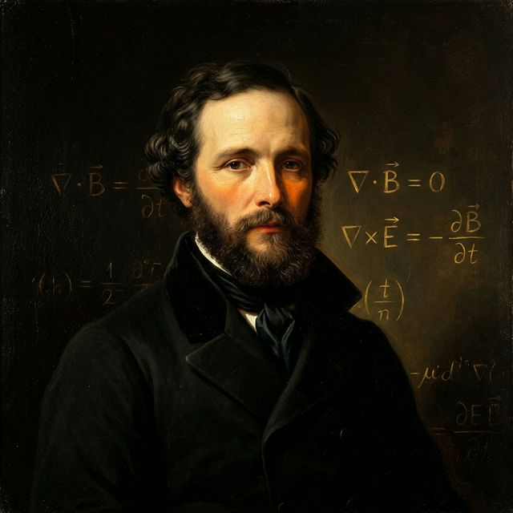

1865

Gauss's Law
∇ · E = ρ / ε₀
Gauss's Law for Magnetism
∇ · B = 0
Faraday's Law
∇ × E = −∂B/∂t
Ampère-Maxwell Law
∇ × B = μ₀(J + ε₀∂E/∂t)
186,000 mi/s
"The velocity is so nearly that of light, that we have strong reason to conclude that light itself... is an electromagnetic disturbance."
— James Clerk Maxwell, 1865
Self-Sustaining Electromagnetic Displacement